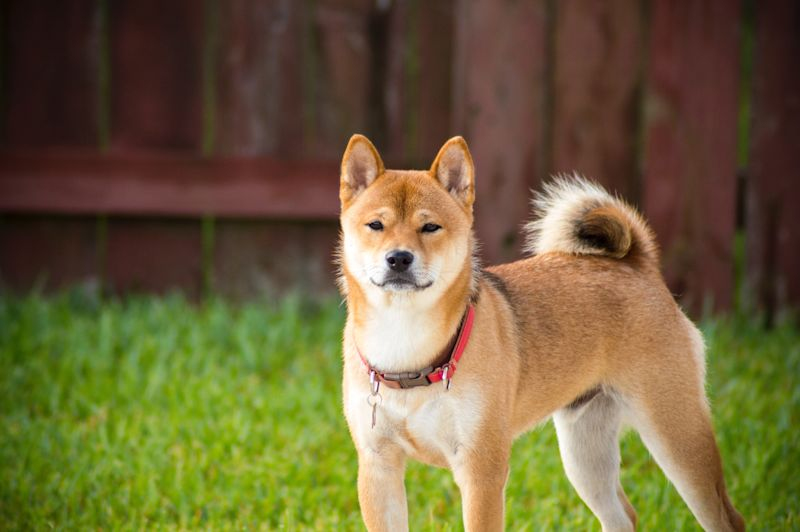

🔑 Key Takeaways
- Puppies need a high-calorie, puppy-formulated diet fed three times daily until six months of age.
- Adult Shiba Inus require 45–60 minutes of exercise per day to maintain healthy weight and muscle tone.
- The double coat requires weekly brushing year-round and daily brushing during seasonal shedding periods.
- Annual vet visits — plus additional puppy appointments — are essential for vaccinations and preventive health screening.
Raising a healthy Shiba Inu is a deeply rewarding commitment, but it requires informed, consistent care across every stage of the dog's life. From the diet choices you make for your eight-week-old puppy to the exercise routine you establish for your seven-year-old adult, every decision contributes to the dog's overall growth, vitality, and quality of life. This care guide is designed to give you practical, actionable guidance on the four pillars of Shiba Inu wellbeing: nutrition, exercise, grooming, and veterinary care.
Because Shiba Inus move through distinct life stages — puppyhood, adolescence, adulthood, and senior years — the right care approach changes as your dog grows. What works perfectly for a three-month-old puppy is not appropriate for a two-year-old adult, and the needs of a ten-year-old senior differ again. The sections below address each pillar of care in the context of these life stages, ensuring that your Shiba Inu receives exactly what it needs at exactly the right time.

Nutrition: Feeding Your Shiba Inu at Every Life Stage
Proper nutrition is the single most impactful factor in a Shiba Inu's growth and long-term health. The right food at the right quantity provides the building blocks for strong bones, lean muscle, a healthy immune system, and optimal cognitive development. Conversely, poor-quality food or overfeeding can lead to stunted growth, obesity, and increased risk of chronic disease.
Puppy Nutrition (Birth to 12 Months)
Shiba Inu puppies have dramatically higher nutritional requirements than adults, proportionally speaking. They need elevated levels of protein (at least 22%), healthy fats (at least 8%), and key micronutrients including calcium, phosphorus, and DHA (an omega-3 fatty acid critical for brain and eye development). Choose a high-quality commercial puppy food with a named meat as the first ingredient (e.g., "chicken," "salmon," or "lamb") and AAFCO certification for growth or all life stages.
Feeding frequency matters as much as food quality during puppyhood. Until six months of age, offer meals three times per day at consistent times. This steady caloric input supports rapid growth without causing blood sugar spikes and crashes. After six months, transition to twice-daily feeding. Always measure portions accurately using the guidelines on the food packaging as a starting point, then adjust based on your individual puppy's growth rate and body condition.
Adult Nutrition (1 to 7 Years)
Once your Shiba Inu reaches 12 months of age, transition gradually from puppy food to a high-quality adult formula over the course of seven to ten days. Adult Shiba Inus require approximately 600–900 calories per day, depending on their size and activity level. A 23 lb male doing moderate daily exercise typically needs around 730–780 calories; a less active female at 17 lbs may need closer to 550–620 calories.
The cornerstone of a good adult diet for a Shiba Inu remains high-quality animal protein (at least 18% in dry matter), moderate fat, and limited simple carbohydrates. Many Shiba Inu owners and breeders prefer grain-free or limited-ingredient diets, though the evidence on grain-free diets and heart health in dogs continues to evolve — consult your veterinarian for current guidance. Fresh water must always be freely available.
Senior Nutrition (7+ Years)
As Shiba Inus enter their senior years, their metabolism slows, they become less physically active, and their nutritional needs shift once more. Senior dogs often benefit from slightly reduced calories to prevent weight gain, higher-quality protein to maintain muscle mass, and supplements such as glucosamine and chondroitin to support joint health. Omega-3 fatty acids from fish oil can help reduce inflammation associated with aging joints. Your veterinarian can recommend a senior diet or supplement protocol tailored to your dog's specific health profile.
Exercise: Keeping Your Shiba Inu Active and Fit
The Shiba Inu was bred as a hunting dog in Japan's rugged mountain terrain, and this heritage has left the breed with a natural athleticism, endurance, and strong prey drive that persists to this day. Regular, appropriate exercise is not merely beneficial for a Shiba Inu — it is essential. A Shiba Inu that does not get enough physical activity will find its own outlets, which typically means destructive behavior, excessive vocalization (the famous "Shiba scream"), or attempts to escape the yard.
Exercise for Puppies
Puppy exercise requires a thoughtful approach. While puppies seem to have boundless energy, their developing joints and growth plates are vulnerable to damage from repetitive high-impact activities like long runs or jumping from height. The general guideline is five minutes of structured exercise per month of age, twice per day — so a four-month-old puppy gets approximately two sessions of 20 minutes each. Free play in a safely enclosed space, short leash walks, and gentle games of fetch are ideal. Avoid forced running or rough terrain until the puppy is at least 12–14 months old.
Exercise for Adult Shiba Inus
Adult Shiba Inus thrive on a daily exercise routine of 45–60 minutes, which can be broken into two 20–30 minute sessions. A combination of leashed walks (to allow sniffing and mental stimulation), off-leash time in a securely fenced area, and interactive play sessions — fetch, tug, or hide-and-seek with toys — provides both physical and mental enrichment. Shiba Inus are also well-suited to activities such as agility, rally obedience, and hiking on moderate trails.
Always walk your Shiba Inu on leash in unfenced areas. Their prey drive is strong and deeply instinctive — they will give chase to a squirrel, bird, or even a leaf without a second thought, and their speed and agility make recall unreliable in high-stimulation environments. A securely fitted harness is often recommended over a collar, as Shiba Inus are adept at slipping out of collars.
Daily Walks
Two 20–30 minute leash walks provide predictable physical exercise and crucial sniffing/mental stimulation.
Off-Leash Play
A safely fenced yard or dog park session allows your Shiba to run freely and satisfy their prey-chase instinct.
Mental Enrichment
Puzzle feeders, nose-work games, and training sessions tire a Shiba Inu's sharp mind as effectively as physical exercise.
Hiking & Agility
Moderate trails and agility courses challenge the Shiba Inu's athletic body and satisfy their working-dog heritage.
Grooming: Caring for the Shiba Inu's Double Coat
The Shiba Inu's double coat is beautiful, practical, and surprisingly manageable — provided owners establish a regular grooming routine. The coat consists of a straight, stiff outer coat that repels dirt and moisture, and a soft, dense undercoat that provides insulation. Together, these layers give the breed their characteristic plush appearance.
Routine Coat Care
During normal, non-shedding periods, weekly brushing with a pin brush or a medium-toothed comb is sufficient to remove loose fur and maintain coat health. Focus attention on areas prone to matting: behind the ears, under the collar, at the base of the tail, and in the "armpits" (axillae). Bathing every four to six weeks using a gentle, dog-specific shampoo keeps the coat clean without stripping its natural oils. After bathing, thorough drying — either by towel or a low-heat blow dryer — prevents the undercoat from remaining damp, which can lead to skin irritation.
Shedding Season Care
Twice each year — typically in spring and autumn — the Shiba Inu undergoes a dramatic coat blow, releasing the undercoat in large quantities over two to three weeks. During this period, daily brushing with an undercoat rake or a deshedding tool dramatically reduces the amount of fur shed into the home and helps the new coat grow in evenly. Some owners opt for a professional grooming session at the start of shedding season to help along the process. Bathing before intensive brushing loosens the undercoat and makes removal more efficient.
Nail, Ear, and Dental Care
Nail trimming every three to four weeks prevents overgrowth that can affect gait and cause discomfort. If you can hear your dog's nails clicking on a hard floor, it is time for a trim. Use sharp, dog-specific nail clippers and clip small amounts at a time to avoid the quick (the blood vessel inside the nail). Ears should be checked monthly for redness, odor, or excessive debris — signs of infection that warrant a vet visit. Dental hygiene is often overlooked but critically important: brushing your Shiba Inu's teeth several times per week using dog-specific toothpaste significantly reduces the risk of periodontal disease, which affects the majority of adult dogs over three years old.
Veterinary Care: Prevention Is the Best Medicine
A strong relationship with a trusted veterinarian is one of the most valuable investments you can make in your Shiba Inu's health. Preventive veterinary care catches problems early, before they become serious — and for a breed with known predispositions to certain health conditions, early detection is especially important.
Puppy Vet Schedule
New Shiba Inu puppies typically require multiple veterinary visits in their first year. The standard puppy vaccine schedule begins at six to eight weeks and includes core vaccines (distemper, parvovirus, adenovirus, parainfluenza) given as a series every three to four weeks until 16 weeks of age, followed by a rabies vaccine at 12–16 weeks. Your veterinarian will also recommend preventive care for intestinal parasites and discuss heartworm and flea/tick prevention appropriate for your region. A spay or neuter consultation is typically recommended between 6 and 12 months of age, though recent evidence suggests waiting until physical growth is complete may benefit joint health.
Adult Annual Exams
Adult Shiba Inus should visit the veterinarian at least once per year for a full physical examination, booster vaccinations as appropriate, dental assessment, and blood work if recommended based on age or risk factors. Thyroid function testing (T4 levels) is advisable for Shiba Inus showing signs of hypothyroidism — unexplained weight gain, lethargy, a dry or dull coat, or unusual cold sensitivity. Hip and patella evaluations are worthwhile for dogs intended for breeding or those showing signs of joint discomfort.
Senior Wellness Checks
Dogs over seven years of age benefit from twice-yearly veterinary examinations. Senior wellness panels — blood chemistry, complete blood count, urinalysis, thyroid panel, and blood pressure — provide a comprehensive picture of organ function and catch age-related changes early. Common senior concerns in Shiba Inus include dental disease, joint stiffness, mild cognitive changes, and an increased tendency toward weight gain. With proactive monitoring and appropriate management, many Shiba Inus remain vibrant and active well into their teens.
Common Health Conditions in Shiba Inus
Being aware of the health conditions to which Shiba Inus are prone allows you to recognize early warning signs and seek prompt veterinary attention. The most commonly observed conditions include:
- Hypothyroidism: Reduced thyroid hormone output. Signs include weight gain, lethargy, coat changes, and skin problems. Managed with daily oral medication.
- Patellar Luxation: Kneecap slipping out of place. Mild cases may require only monitoring; severe cases benefit from surgical correction.
- Hip Dysplasia: Malformation of the hip joint. Weight management, physical therapy, and in some cases surgery improve quality of life.
- Allergies: Both environmental and food allergies are relatively common. Signs include itching, licking paws, and recurrent skin or ear infections.
- Glaucoma: Elevated intraocular pressure that can lead to vision loss. Regular eye exams aid early detection.
- Obesity: Overweight dogs face dramatically increased risks of joint disease, heart disease, and shortened lifespan. Weight management is preventive care.